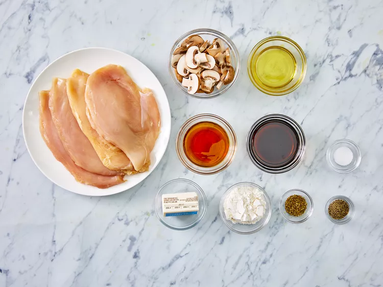
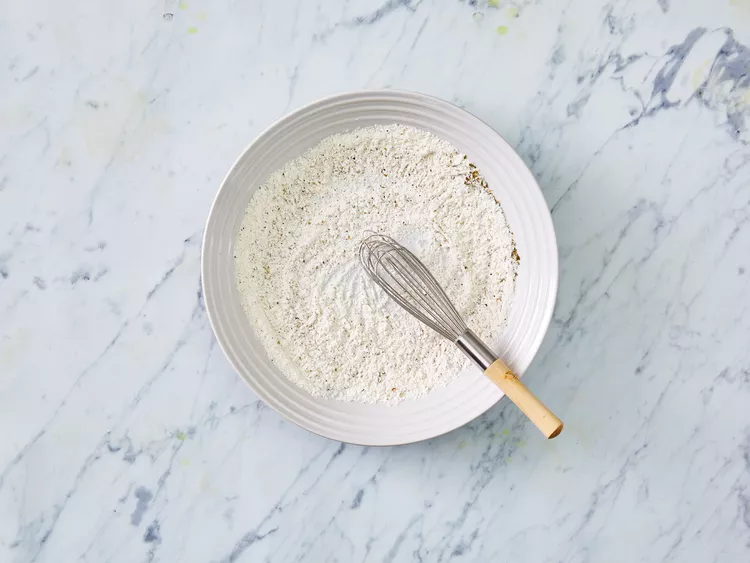
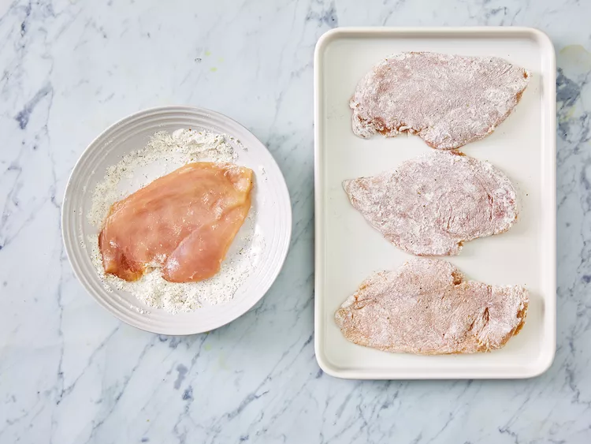
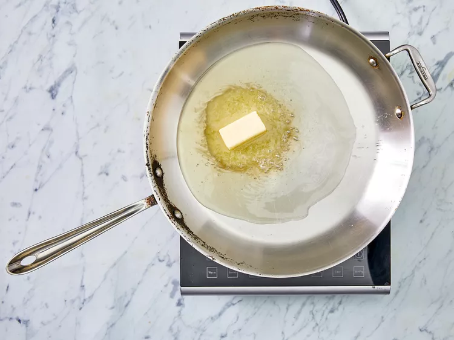
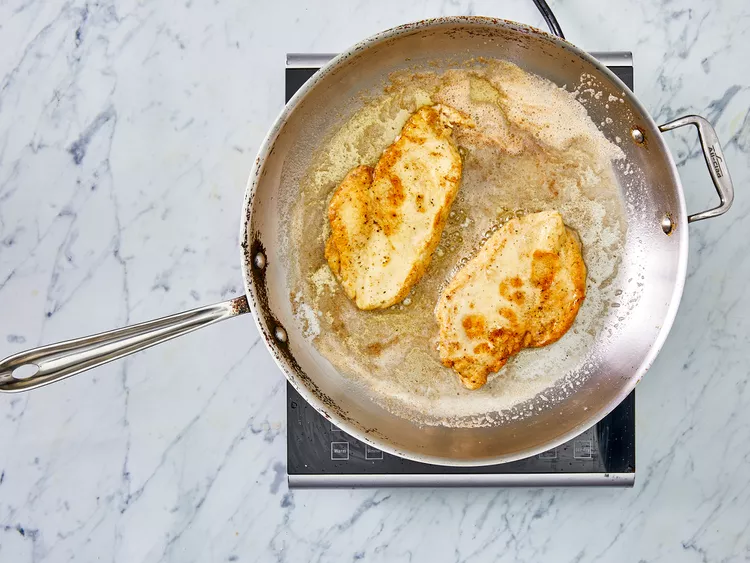
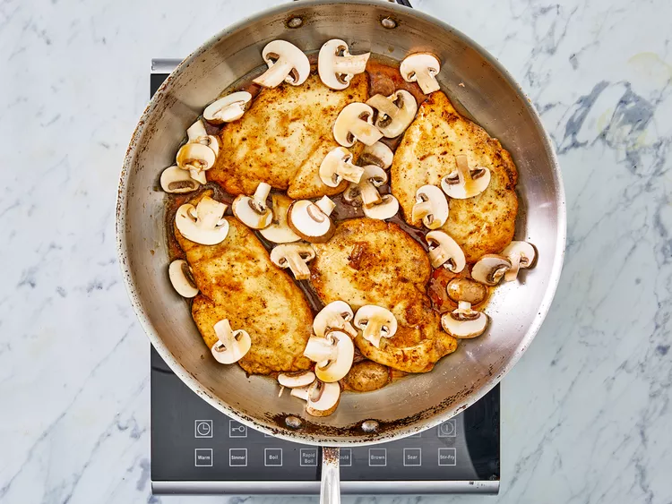
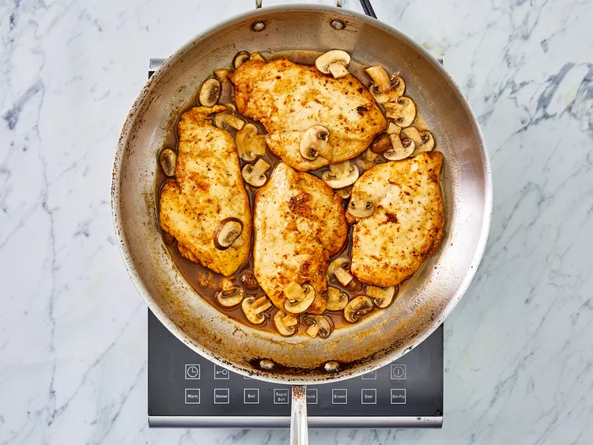

Chicken Marsala

What is Chicken Marsala?
Chicken Marsala is a succulent dish that features
thinly sliced pieces of pan-fried chicken
breast and mushrooms in a reduced wine sauce.
Its name comes from the fortified Italian wine
used to give the dish its trademark deep,
nutty, and slightly sweet flavor.
Ingredients
- 1/4 cup all-purpose flour for coating
- 1/2 teaspoon salt
- 1/4 teaspoon ground black pepper
- 1/2 teaspoon dried oregano
- 4 medium skinless, boneless chicken breast halves- pounded 1/4" thick
- 4 tablespoons butter
- 4 tablespoons olive oil
- 1 cup sliced mushrooms
- 1/2 cup Marsala wine
- 1/4 cup cooking sherry
Steps
- Gather all ingredients.

- In a shallow dish or bowl, mix together the flour, salt, pepper and oregano.

- Coat chicken pieces in flour mixture.

- In a large skillet, melt butter in olive oil over medium heat. Place chicken in the pan, and lightly brown.


- Turn over chicken pieces and add mushrooms. Pour wine and sherry.

- Cover skillet; simmer chicken for 10 minutes, turning once, until no longer pink and juices run clear.

- Serve hot and enjoy!